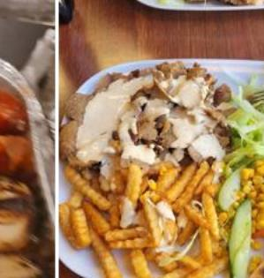

Döner
Markens gate 35
Tyrkisk og syrisk grill midt i Kristiansand sentrum. Döner, shawarma, pizza, burger og falafel når du vil ha noe raskt, varmt og skikkelig digg.
Ali Baba Grill bør føles som et klart valg når folk søker etter kebab i Kristiansand: raskt å bestille, lett å finne, og fristende nok til at mobilen havner rett på ringeknappen.
Hvorfor velge Ali Baba